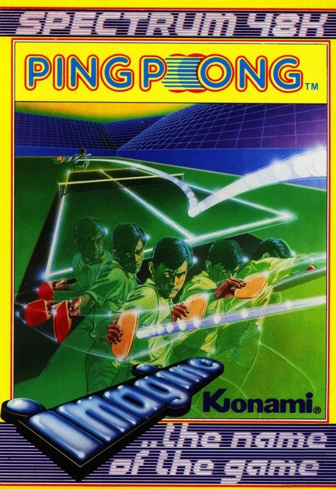
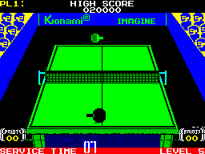

Ping Pong


{kind=link}

| Publisher: | Imagine Software Ltd |
| Price: | £7.95 |
| Year: | 1986 |
| Source: | CRASH, Issue 28 |

Years on from the classic Pong game which had a lot to do with the birth of the computer games industry, Imagine have decided to tackle the sport of Ping Pong, releasing a product which plays rather more like the game of table tennis than the early bat and ball game. Imagine’s Ping Pong is a conversion of Konami’s arcade game and abides to all the rules and regulations of table tennis, interpreted automatically by a computerised judge — there’s no room for tantrums in this game. The first player to score eleven points wins, unless there’s a 10-10 tie, and five levels of play are available, ranging from nice ’n’ slow to oriental style, played at the speed of sound.

he's got the ball down the computer's
end of the table. The CPU's winning 2-0
and so far Cameron hits the ball twice
— you can tell that from the Player One
score at the top of the screen.
The game is viewed from above and behind the base line of the table with your bat positioned about a quarter of the way up the screen. Player One always plays from this view point and the computer or second player takes the top end of the table — there’s no change of ends. The score and other relevant information, including the judge’s calls, is displayed on either side of the table. The audience appears on both sides of the screen, with the right hand side mob cheering on the computer or Player Two, whilst the spectators on the left shout and clap if you score a winning point.
The bat is controlled by a phantom disembodied hand — thus avoiding the problems that would be posed by full-size figures: seeing the table would be tricky. Timing and hitting a shot correctly is the key to the game — the computer automatically tracks the ball and always makes sure that your bat is behind it. When the ball reaches the bat select the sort of shot you’d like to play by pressing either left, right or up as the ball hits the bat — pressing right when the ball hits the bat gives a cut, left a drive and up a smash (but only smash when the ball is lobbed). The timing of the strike governs the direction in which the ball moves, veering to the left or right of the table. The bat is normally held forehand, but pressing the fire button switches to backhand mode allowing you to return a ball hit to the extreme right hand corner of the table.
The human player always has to serve first and this is done by pressing down to throw the ball into the air and following with a normal shot. There’s a time limit to each serve and if the ball doesn’t cross the net within seven seconds, a point is awarded to the opponent. After five points have been scored the service changes over, unless the game is tied at ten points apiece, when service alternates and the game continues until one player gets two points ahead of the other or reaches fifteen points.
Apart from the match points, players can collect points during the game and go for an entry on the Ping Pong high score table. Each time a player hits the ball, ten points are added to his or her score, while a massive five hundred points can be collected by successfully smashing the ball and winning a game point. At the end of each level of play, a bonus of one thousand points is awarded to the winner for each game point of the winning margin.
In the one player mode in which a human pits skills with the Spectrum’s Central Processing Unit, play moves up a level each time the CPU loses. Two players play best of three matches to decide the winner, and select the skill level they wish to play at.
CRITICISM
‘I loaded Ping Pong and immediately thought a Commodore 64 was attached... the sound on the game is brilliant, amazing — it defies all adjectives. Excellent drum beats, cool synth techniques: Wow! The game itself is very original and kept me compelled for ages. Imagine seem to be taking the software market by storm this year, I just hope they can keep it up! The table tennis table is well laid out in true 3D fashion and the game includes lots of nice features — apart from the usual definable keys there’s a most exciting two player option and five levels of difficulty. Imagine seem to push the Spectrum to its limits with every game they bring out, goodness only knows what they’re going to put on the 128K! I would recommend any arcade freak to buy Ping Pong at what is a very cheap price for a game of this quality on the Spectrum — and if you like adventures just buy it and dance to that groovy beat...’
‘The loading screen isn’t of the usual Ocean/Imagine quality, but all my fears were dashed when I heard the tune; undoubtedly the best on the Spectrum yet! I felt the only real thing wrong with the game is that the bat graphics could have been improved and given more movement — at the moment the bat seems to be controlled by wrist action only. Other than that, I think it’s got everything a good game needs — it’s attractive, addictive, and very playable. Imagine have done it again and now I’ve got to go and crack level five.’
‘Konami’s arcade game never really took off in Britain and after playing this I can’t understand why — it’s a really great game. The graphics suit the game very well and there are no attribute problems at all, but the sound... super duper, spiffing stuff guys! I really couldn’t believe that a humble BEEPy Spectrum was uttering such impressive music. Just listen to it! The game plays very well too and is well worth buying.’
COMMENTS
| Control keys: | All definable |
| Joystick: | Kempston, Interface 2, Cursor |
| Use of colour: | A bit bland, but fine |
| Graphics: | Not overly wonderful, but adequate for the game |
| Sound: | Unbelievably good — Spectrum excellence |
| Skill levels: | Five |
| Screens: | One |
| General Rating: | A highly playable and enjoyable sports simulation. |
| Use of Computer: | 92% |
| Graphics: | 82% |
| Playability: | 94% |
| Getting Started: | 93% |
| Addictive Qualities: | 91% |
| Value For Money: | 89% |
| Overall: | 90% |